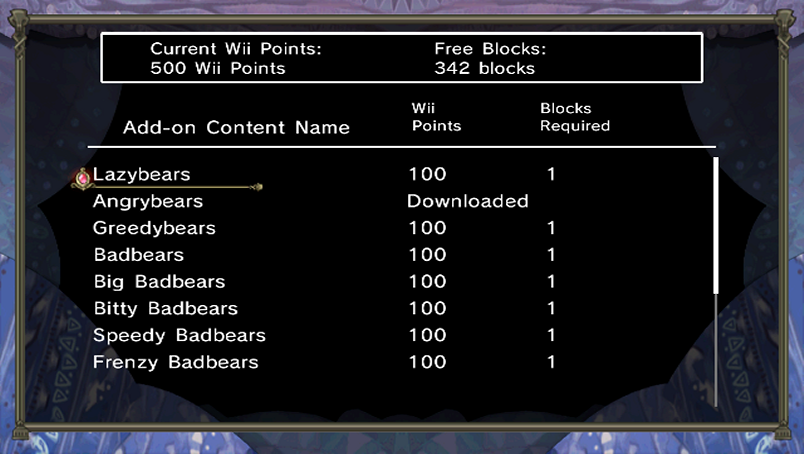

16 |
Contenu supplémentaire |
 |
|

Vous devez disposer de Wii Points pour acheter du contenu supplémentaire.
Chapitres supplémentaires
・Hidden Tome, Vol. 1 (tome caché 1) (300 Wii Points / Blocs nécessaires : 2)
・Hidden Tome, Vol. 2 (tome caché 2) (300 Wii Points / Blocs nécessaires : 2)
Unités supplémentaires
・Lazybears (ours paresseux) (100 Wii Points / Blocs nécessaires : 2)
・Angrybears (ours en colère) (100 Wii Points / Blocs nécessaires : 2)
・Greedybears (ours cupides) (100 Wii Points / Blocs nécessaires : 2)
・Badbears (abominours) (100 Wii Points / Blocs nécessaires : 2)
・Big Badbears (gros abominours) (100 Wii Points / Blocs nécessaires : 2)
・Bitty Badbears (mini-abominours) (100 Wii Points / Blocs nécessaires : 2)
・Speedy Badbears (abominours rapides) (100 Wii Points / Blocs nécessaires : 2)
・Frenzy Badbears (abominours frénétiques) (100 Wii Points / Blocs nécessaires : 2)
・Fire Sprites (esprits de feu) (100 Wii Points / Blocs nécessaires : 2)
・Big Fire Sprites (grands esprits de feu) (100 Wii Points / Blocs nécessaires : 2)
・Water Sprites (esprits des eaux) (100 Wii Points / Blocs nécessaires : 2)
・Big Water Sprites (grands esprits des eaux) (100 Wii Points / Blocs nécessaires : 2)
・Titanic Troll (troll titanesque) (200 Wii Points / Blocs nécessaires : 2)
Avertissement : vous devez posséder « The Tales of Bearsworth Manor: Chaotic Conflicts » pour pouvoir profiter de ce contenu supplémentaire. Il est impossible d'y jouer sans le jeu principal.
Vous devez disposer de suffisamment d'espace libre dans la mémoire de la console Wii pour télécharger ce contenu supplémentaire. Pour libérer de l’espace, transférez des données sur une carte SD ou effacez des données inutiles à partir de l'écran de gestion des données. |
 |
 |